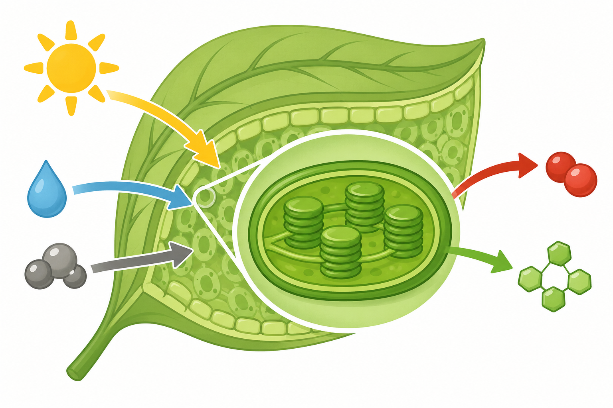
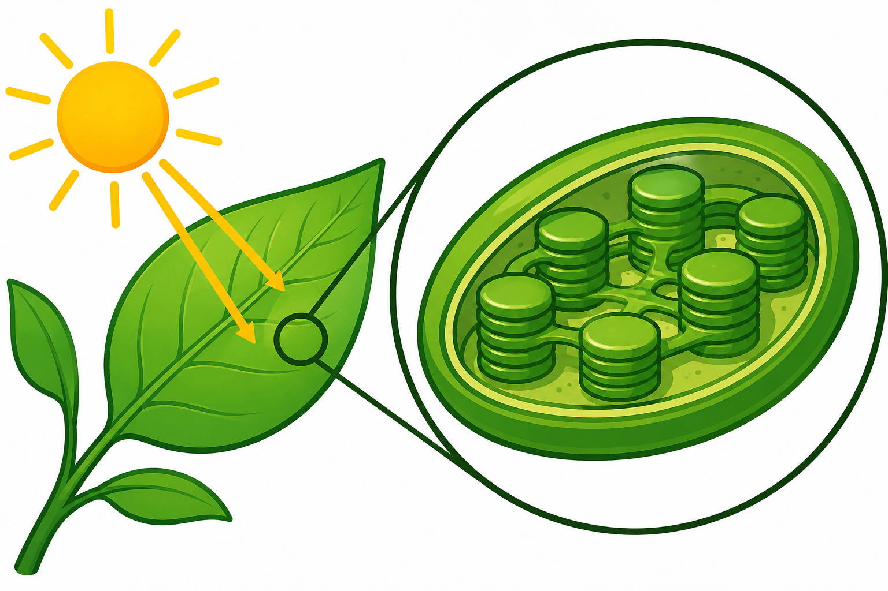
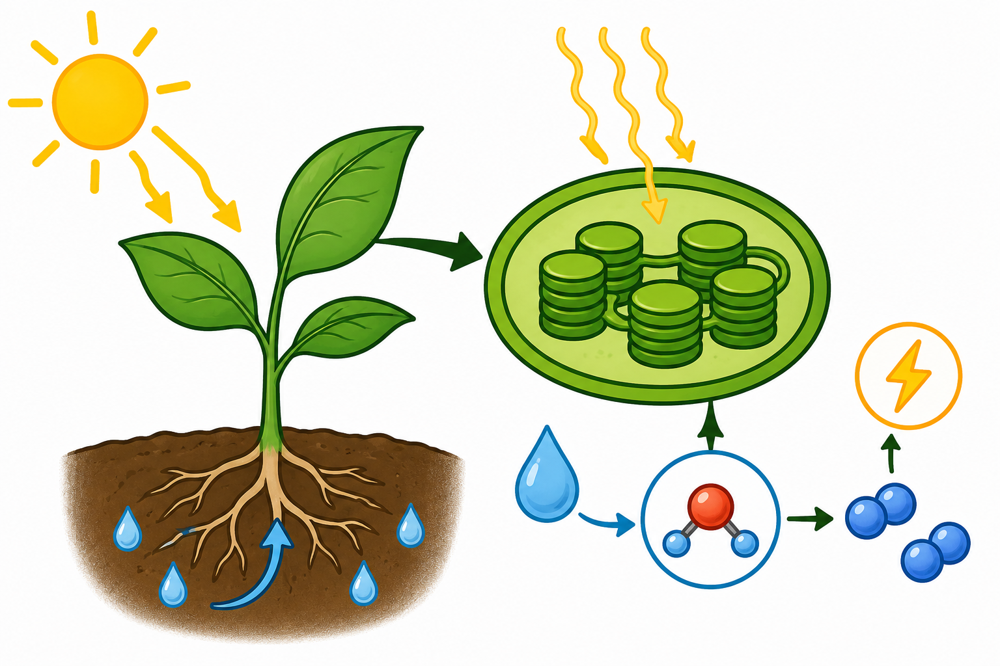

Bem-vindo!
Este site foi desenvolvido para ensinar o conteúdo de Fotossíntese de maneira acessível e inclusiva para estudantes com deficiência visual. Aqui você encontrará textos claros, descrições de imagens, áudios explicativos, atividades e recursos que facilitam a aprendizagem.
Tema
Fotossíntese
Público-alvo
Alunos do 7º ano do Ensino Fundamental com deficiência visual (cegueira ou baixa visão).
Objetivos de Aprendizagem
- Compreender o que é a fotossíntese.
- Identificar os elementos necessários para que ela aconteça.
- Explicar a importância da fotossíntese para os seres vivos.
- Relacionar a fotossíntese com a produção de oxigênio e alimentos.
Justificativa
A fotossíntese é um dos processos mais importantes da natureza, pois permite que as plantas produzam seu próprio alimento e liberem oxigênio para a atmosfera.
Este site foi desenvolvido seguindo princípios de acessibilidade, utilizando recursos como audiodescrição, textos alternativos e conteúdo compatível com leitores de tela, garantindo que estudantes com deficiência visual tenham acesso ao conhecimento em igualdade de condições.
Clique no botão para o sistema ler o texto.
Módulo 1: Introdução
Este site foi desenvolvido com o objetivo de ensinar o conteúdo de Fotossíntese de forma acessível, interativa e inclusiva para estudantes com deficiência visual, incluindo pessoas com cegueira e baixa visão.
A fotossíntese é um dos processos mais importantes da natureza, pois é por meio dela que as plantas produzem seu próprio alimento utilizando a luz do Sol, a água e o gás carbônico, além de liberarem o oxigênio essencial para a vida na Terra.
Pensando na inclusão, este ambiente foi planejado para oferecer uma experiência de aprendizagem acessível a todos. Para isso, utilizamos recursos como textos claros e objetivos, descrições detalhadas das imagens (audiodescrição), conteúdos compatíveis com leitores de tela e materiais em áudio, permitindo que estudantes com deficiência visual possam compreender o conteúdo com autonomia e igualdade de oportunidades.
Esperamos que este site contribua para uma aprendizagem significativa, despertando a curiosidade sobre a importância da fotossíntese para o meio ambiente e para a manutenção da vida em nosso planeta.
Clique no botão para o sistema ler o texto.

Descrição da imagem (audiodescrição)
Ilustração de uma planta verde sob a luz do sol. As raízes absorvem água do solo. As folhas recebem gás carbônico do ar. A planta utiliza a luz do sol para produzir glicose (alimento) e liberar oxigênio para a atmosfera.
Leitor de Tela
Este site é compatível com leitores de tela. Navegue utilizando as teclas de atalho do seu leitor para uma melhor experiência.
Módulo 2: Como Funciona a Fotossíntese? Os Conceitos Principais
A fotossíntese é o processo pelo qual as plantas, algas e algumas bactérias produzem o seu próprio alimento. É através dela que a energia do Sol entra no nosso mundo, garantindo a sobrevivência de quase todos os seres vivos na Terra.
Para entender como essa "mágica" acontece, precisamos conhecer três conceitos muito importantes:
1. O Cloroplasto: A "Cozinha" da Planta
Todo o processo da fotossíntese acontece dentro de uma estrutura muito pequena e especial chamada cloroplasto. Ele fica dentro das células das plantas, principalmente nas folhas. Pense no cloroplasto como uma minúscula cozinha movida a energia solar, onde a planta prepara o seu alimento.
2. A Primeira Etapa: Reação Luminosa (A fase da luz)
A fotossíntese não acontece toda de uma vez. A primeira parte precisa da luz do Sol para funcionar. Veja o que acontece nesta etapa:
- A planta capta a energia da luz do Sol através de pigmentos, como a clorofila.
- Ela usa a água que as raízes puxaram da terra.
- A energia do Sol "quebra" a molécula de água. É exatamente nesse momento que a planta libera o oxigênio no ar para nós respirarmos!
Nesta fase, a planta guarda energia, mas ainda não produziu o seu alimento (o açúcar).
3. A Segunda Etapa: Fixação de Carbono (A fabricação do alimento)
Na segunda parte do processo, a planta vai finalmente criar a sua comida. Funciona assim:
- A planta absorve o gás carbônico (CO2) que está no ar.
- Ela mistura esse gás carbônico com a energia que guardou lá na primeira etapa (a fase da luz).
- O resultado dessa mistura é a produção de açúcares (como o amido e a sacarose), que são o alimento que faz a planta crescer forte e saudável.
Resumo Rápido
Se fôssemos criar uma "receita" para a fotossíntese, ela seria assim:
- Ingredientes que a planta pega: Luz do Sol + Água + Gás Carbônico.
- O que a planta devolve para o mundo: O próprio alimento (açúcar) + Oxigênio.
Clique no botão para o sistema ler o texto.


Descrição das mídias (audiodescrição)
Imagem 1: Ilustração de um cloroplasto funcionando como uma cozinha da planta. Setas indicam a entrada de luz solar, água e gás carbônico, e a saída de açúcar e oxigênio.
Imagem 2: Esquema visual demonstrando o resumo da fotossíntese, com a energia solar, água e gás carbônico se transformando em alimento e oxigênio.
Vídeo: Um vídeo com uma explicação detalhada sobre o processo da fotossíntese.
Leitor de Tela
Este site é compatível com leitores de tela. Navegue utilizando as teclas de atalho do seu leitor para uma melhor experiência.
Módulo 3: Para que serve a Fotossíntese no nosso dia a dia?
A fotossíntese não acontece apenas lá longe, na natureza. Ela está presente na nossa vida o tempo todo! Veja alguns exemplos práticos de como dependemos desse processo:
1. A Base do Nosso Cardápio
Sabe aquele lanche gostoso no intervalo? Ele só existe por causa da fotossíntese!
Mesmo que você esteja comendo um pedaço de queijo ou carne, a vaca que produziu o leite e a carne precisou comer capim para crescer. Como as plantas são os únicos seres que fabricam o próprio alimento, elas são o começo de toda a nossa cadeia alimentar. Sem elas, não haveria comida para nós.
2. O Combustível dos Carros no Brasil
Você sabia que muitos carros rodam graças à fotossíntese?
No Brasil, usamos muito o etanol (álcool) como combustível. Esse combustível é feito a partir da cana-de-açúcar. A cana usa a energia do Sol para crescer e produzir açúcar, e nós transformamos esse açúcar em energia para movimentar os veículos.
3. O Ar-Condicionado Natural do Planeta
O gás carbônico é um gás que, em grande quantidade, ajuda a deixar o nosso planeta cada vez mais quente (o chamado aquecimento global).
Quando as plantas fazem fotossíntese, elas "puxam" esse gás carbônico do ar para fabricar a comida delas. Ou seja, as florestas funcionam como um filtro e um ar-condicionado gigante, ajudando a controlar a temperatura da Terra e combatendo as mudanças climáticas.
4. A Roupa que Você Veste e o Caderno que Você Usa
Muitos materiais que usamos na escola e em casa vêm de plantas que cresceram fazendo fotossíntese.
A sua camiseta de algodão, as folhas de papel do seu caderno, as mesas de madeira da sala de aula e até muitos remédios que tomamos quando estamos doentes vêm dos vegetais.
Clique no botão para o sistema ler o texto.

Descrição da imagem (audiodescrição)
Composição de imagens ilustrando as utilidades das plantas no cotidiano: alimentos, um carro sendo abastecido com etanol, uma camiseta de algodão e cadernos de papel.
Leitor de Tela
Este site é compatível com leitores de tela. Navegue utilizando as teclas de atalho do seu leitor para uma melhor experiência.
Página 5: Você Sabia? Curiosidades Incríveis sobre a Fotossíntese
Você já entendeu como as plantas produzem o seu próprio alimento, mas o mundo da fotossíntese é cheio de segredos fascinantes. Separamos algumas curiosidades muito legais para você:
1. O verdadeiro "pulmão do mundo" fica no mar
Quando pensamos em oxigênio, logo imaginamos grandes florestas com árvores gigantes. Mas a verdade é que a maior parte do oxigênio que nós respiramos vem dos oceanos! As algas marinhas e pequenas bactérias (chamadas de cianobactérias) são as grandes campeãs da fotossíntese no nosso planeta.
2. Plantas não "comem" terra
Muitas pessoas acham que as plantas tiram o seu alimento da terra, mas isso é um mito! A terra fornece apenas água e alguns nutrientes básicos. O verdadeiro alimento da planta (o açúcar que dá energia para ela crescer) é fabricado nas folhas, misturando a luz do Sol com o gás carbônico do ar.
3. A "cozinha" da planta é verde
Você já se perguntou por que a maioria das folhas é verde? Isso acontece por causa de um pigmento chamado clorofila. A clorofila fica dentro de uma estrutura minúscula chamada cloroplasto (a "cozinha" da planta). É ela que consegue capturar a energia do Sol. Ela absorve várias cores da luz solar, mas reflete a cor verde, que é exatamente a cor que chega aos nossos olhos!
4. A água "quebra" para nos dar o ar
Durante a primeira etapa da fotossíntese (a fase que precisa de luz), a energia do Sol é tão forte que consegue quebrar as moléculas da água que a planta bebeu. Quando a água se quebra, a planta libera o oxigênio para a atmosfera. Ou seja, o ar que respiramos agora mesmo fez parte de uma gota de água um dia!
Clique no botão para o sistema ler o texto.

Descrição da imagem (audiodescrição)
Composição de imagens ilustrando curiosidades da fotossíntese: o oceano representando a maior produção de oxigênio, uma planta crescendo sem "comer" a terra, o detalhe de uma folha verde e moléculas de água. Lembre-se de ajustar este texto conforme a imagem real que você escolher.
Leitor de Tela
Este site é compatível com leitores de tela. Navegue utilizando as teclas de atalho do seu leitor para uma melhor experiência.
Página 6: Atividades e Desafios
Questões Objetivas
Marque a alternativa correta de acordo com o que aprendemos:
Clique no botão para o sistema ler as questões.
Questões Discursivas
1. Explique com suas palavras por que as plantas são consideradas a base do nosso cardápio, mesmo quando comemos alimentos de origem animal.
2. Como as florestas funcionam como um "ar-condicionado natural" para o nosso planeta?
Atividade Prática
Utilize o gravador de áudio do seu celular. Ouça as explicações das aulas anteriores e grave uma resposta contando como a energia do Sol se transforma no nosso alimento.
Desafio Inclusivo
Grave um áudio curto (até 2 minutos) explicando para um amigo por que as grandes florestas não são o único "pulmão do mundo" e qual é o papel dos oceanos nisso.

Descrição da imagem (audiodescrição)
Ilustração de um estudante sorridente utilizando fones de ouvido e interagindo com um questionário, representando a realização das atividades e o desafio inclusivo de áudio.
Leitor de Tela
As questões objetivas utilizam botões de rádio acessíveis. O botão "Verificar Respostas" anunciará o resultado automaticamente pelo seu leitor de tela.
Página 7 – Tecnologias Assistivas
Este site utiliza as seguintes tecnologias integradas e diretrizes:
- audiodescrição: narrações estruturadas para contextualização;
- textos alternativos nas imagens: tags 'alt' descritivas legíveis por máquinas;
- compatibilidade com leitores de tela: código limpo estruturado semanticamente.
Página 8 – Desenho Universal para Aprendizagem (DUA)
Múltiplas formas de representação:
O conteúdo é apresentado em texto, áudio e imagens com descrição.
Múltiplas formas de ação e expressão:
O estudante responde por escrito ou por gravação de áudio.
Múltiplas formas de engajamento:
São utilizados curiosidades, atividades interativas e desafios para motivar a aprendizagem.
Página 9: Referências
Fontes Consultadas
- Recurso de Aprendizagem Compartilhado (Google)[span_0](start_span)[span_0](end_span)
- Vídeo Explicativo: A importância da Fotossíntese
- Livro de Ciências do 7º ano.[span_2](start_span)[span_2](end_span)
- Ministério da Educação (MEC).[span_3](start_span)[span_3](end_span)